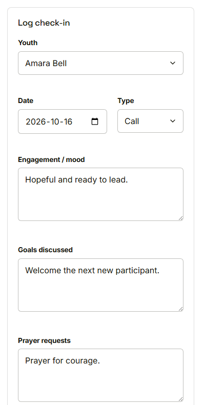
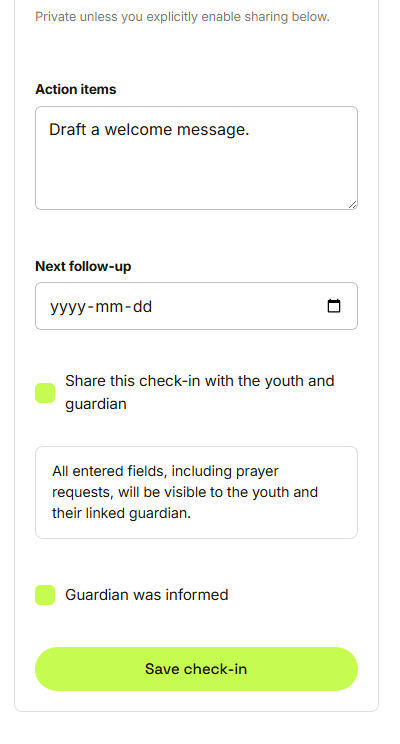
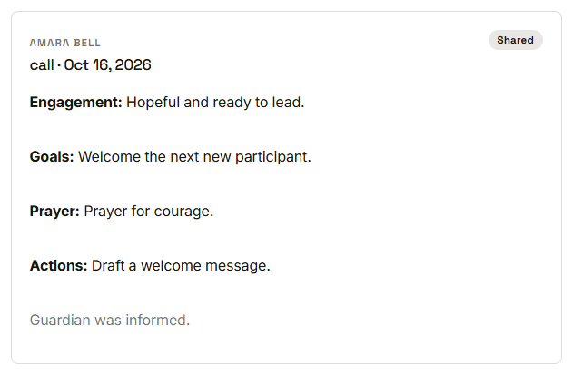

Waypoint · Video 057
Recording a check-in
Private by default, shared only on purpose
The check-in journal
Form on the left, history on the right
Goals, prayer requests, actions

Prayer requests are private unless sharing is switched on
Sharing is a choice

Sharing includes prayer requests
The new entry

Shared, and the guardian was informed
Things to remember
A youth, a date and a type are required
Sharing is off by default
Prayer requests stay mentor-only unless sharing is on
Filter the history by youth and by type